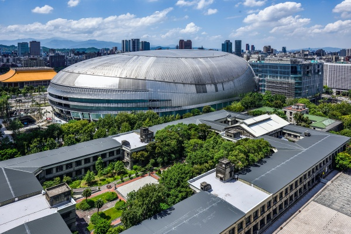
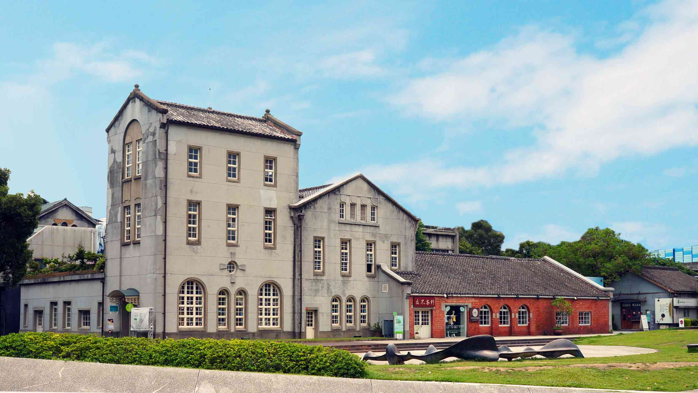

老空間 ‧ 新生命
台北市將許多閒置的舊工廠與倉庫，活化改建為充滿設計感的文創園區。

松山文創園區 (松菸)
前身：台灣總督府專賣局松山菸草工場
位於繁華的信義區旁，這裡保留了日治時期的製菸工廠建築與巴洛克花園。現在進駐了誠品書店、設計選物店與各式展覽。園區內的生態池畔非常適合午後放鬆。
📍 交通：捷運國父紀念館站 5 號出口

華山 1914 文化創意產業園區
前身：台北酒廠
台北最熱門的展演空間之一，工業風的建築與綠意爬藤牆面是這裡的標誌。週末常有文創市集、街頭藝人表演以及電影節活動。光點華山電影館也是文青必訪之地。
📍 交通：捷運忠孝新生站 1 號出口